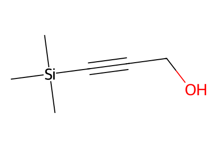
C[Si](C)(C)C#CCOMain Scheme1 plus SI7–32 including isocarvone preparation, 15a hydroboration control, Claisen alternatives, reductive-cyclization byproduct18b, and acylated22a. Failed proposed S7–S10 and18a are not isolated intermediates. Facts compiled deterministically; independent review pending.
完整 JSON · 逐步 CSV · 路线序列 · SDF · HRMS 核对
| 事件 | 分子连接 | 报告产率 | Canonical reaction SMILES |
|---|---|---|---|
| A01 | S1 → S2 | S2: 82% | C[Si](C)(C)C#CCO>>C[Si](C)(C)/C=C/C=O |
| A02 | S2 + S3 → S4 | S4: 58% | CC(=O)CC(=O)OC(C)(C)C.C[Si](C)(C)/C=C/C=O>>C[Si](C)(C)[C@@H]1CC=CC(=O)C1 |
| A03 | S4 + isopropenylmagnesium bromide → S5 | S5: 70% | C=[C](C)[Mg][Br].C[Si](C)(C)[C@@H]1CC=CC(=O)C1>>C=C(C)[C@H]1CC(=O)C[C@H]([Si](C)(C)C)C1 |
| A04 | S5 → S6 | S6: 72% | C=C(C)[C@H]1CC(=O)C[C@H]([Si](C)(C)C)C1>>C=C(C)[C@@H]1CC=CC(=O)C1 |
| A05 | S6 → 11 | 11: 65% | C=C(C)[C@@H]1CC=CC(=O)C1>>C=C(C)[C@@H]1CC(=O)C=C(C)C1 |
| B01 | 11 + 10 → 12 | 12: 65% | C=C(C)[C@@H]1CC(=O)C=C(C)C1.CC(C)(C)[Si](OCCI)(c1ccccc1)c1ccccc1>>C=C(C)[C@@H]1CC(=O)C(CCO[Si](c2ccccc2)(c2ccccc2)C(C)(C)C)=C(C)C1 |
| B02 | 12 → 13 | 13: 83% | C=C(C)[C@@H]1CC(=O)C(CCO[Si](c2ccccc2)(c2ccccc2)C(C)(C)C)=C(C)C1>>C=C(C)[C@@H]1CC(=O)[C@@H](CCO[Si](c2ccccc2)(c2ccccc2)C(C)(C)C)C(C)(C)C1 |
| B03 | 13 → 14 | 14: 91% | C=C(C)[C@@H]1CC(=O)[C@@H](CCO[Si](c2ccccc2)(c2ccccc2)C(C)(C)C)C(C)(C)C1>>C=C(C)[C@@H]1C=C(OS(=O)(=O)C(F)(F)F)[C@@H](CCO[Si](c2ccccc2)(c2ccccc2)C(C)(C)C)C(C)(C)C1 |
| B04 | 14 → 15 | 15: 92% | C=C(C)[C@@H]1C=C(OS(=O)(=O)C(F)(F)F)[C@@H](CCO[Si](c2ccccc2)(c2ccccc2)C(C)(C)C)C(C)(C)C1>>C=C(C)[C@@H]1C=C(C(=O)OC)[C@@H](CCO[Si](c2ccccc2)(c2ccccc2)C(C)(C)C)C(C)(C)C1 |
| B05 | 15 → 16 | 16: 85% | C=C(C)[C@@H]1C=C(C(=O)OC)[C@@H](CCO[Si](c2ccccc2)(c2ccccc2)C(C)(C)C)C(C)(C)C1>>COC(=O)C1=C[C@@H]([C@@H](C)CB2OC(C)(C)C(C)(C)O2)CC(C)(C)[C@@H]1CCO[Si](c1ccccc1)(c1ccccc1)C(C)(C)C |
| B06 | 16 → 9 | 9: 90% | COC(=O)C1=C[C@@H]([C@@H](C)CB2OC(C)(C)C(C)(C)O2)CC(C)(C)[C@@H]1CCO[Si](c1ccccc1)(c1ccccc1)C(C)(C)C>>C[C@@H](CB1OC(C)(C)C(C)(C)O1)[C@@H]1C=C(CO)[C@@H](CCO[Si](c2ccccc2)(c2ccccc2)C(C)(C)C)C(C)(C)C1 |
| B07 | 15 → 15a | 15a: 92% | C=C(C)[C@@H]1C=C(C(=O)OC)[C@@H](CCO[Si](c2ccccc2)(c2ccccc2)C(C)(C)C)C(C)(C)C1>>C=C(C)[C@@H]1C=C(CO)[C@@H](CCO[Si](c2ccccc2)(c2ccccc2)C(C)(C)C)C(C)(C)C1 |
| B08 | 15a → 9 + 9-epi13 | 72% combined mixture yield | C=C(C)[C@@H]1C=C(CO)[C@@H](CCO[Si](c2ccccc2)(c2ccccc2)C(C)(C)C)C(C)(C)C1>>C[C@@H](CB1OC(C)(C)C(C)(C)O1)[C@@H]1C=C(CO)[C@@H](CCO[Si](c2ccccc2)(c2ccccc2)C(C)(C)C)C(C)(C)C1.C[C@H](CB1OC(C)(C)C(C)(C)O1)[C@@H]1C=C(CO)[C@@H](CCO[Si](c2ccccc2)(c2ccccc2)C(C)(C)C)C(C)(C)C1 |
| B09 | 9 + 8 → 7 | 7: 88% | C[C@@H](CB1OC(C)(C)C(C)(C)O1)[C@@H]1C=C(CO)[C@@H](CCO[Si](c2ccccc2)(c2ccccc2)C(C)(C)C)C(C)(C)C1.O=C1CCC(=O)C1>>C[C@@H](CB1OC(C)(C)C(C)(C)O1)[C@@H]1C=C(COC2=CC(=O)CC2)[C@@H](CCO[Si](c2ccccc2)(c2ccccc2)C(C)(C)C)C(C)(C)C1 |
| C01 | 7 → 17a + 17b | 17a: 55%; 17b: 36% | C[C@@H](CB1OC(C)(C)C(C)(C)O1)[C@@H]1C=C(COC2=CC(=O)CC2)[C@@H](CCO[Si](c2ccccc2)(c2ccccc2)C(C)(C)C)C(C)(C)C1>>C=C1[C@H](C2=C(O)CCC2=O)[C@@H]([C@@H](C)CB2OC(C)(C)C(C)(C)O2)CC(C)(C)[C@@H]1CCO[Si](c1ccccc1)(c1ccccc1)C(C)(C)C.CC1=C(CCO[Si](c2ccccc2)(c2ccccc2)C(C)(C)C)C(C)(C)C[C@H]([C@@H](C)CB2OC(C)(C)C(C)(C)O2)[C@@H]1C1=C(O)CCC1=O |
| C02 | 7 → 17 | 17: 54% | C[C@@H](CB1OC(C)(C)C(C)(C)O1)[C@@H]1C=C(COC2=CC(=O)CC2)[C@@H](CCO[Si](c2ccccc2)(c2ccccc2)C(C)(C)C)C(C)(C)C1>>C=C1[C@H](C2=C(OC)CCC2=O)[C@@H]([C@@H](C)CB2OC(C)(C)C(C)(C)O2)CC(C)(C)[C@@H]1CCO[Si](c1ccccc1)(c1ccccc1)C(C)(C)C |
| C03 | 17 → 6 | 6: 75% | C=C1[C@H](C2=C(OC)CCC2=O)[C@@H]([C@@H](C)CB2OC(C)(C)C(C)(C)O2)CC(C)(C)[C@@H]1CCO[Si](c1ccccc1)(c1ccccc1)C(C)(C)C>>C=C1[C@H](C2=C(OC)CCC2=O)[C@@H]([C@@H](C)C=O)CC(C)(C)[C@@H]1CCO[Si](c1ccccc1)(c1ccccc1)C(C)(C)C |
| C04 | 6 → 18 + 18b | 18: 75%; 18b: 5% | C=C1[C@H](C2=C(OC)CCC2=O)[C@@H]([C@@H](C)C=O)CC(C)(C)[C@@H]1CCO[Si](c1ccccc1)(c1ccccc1)C(C)(C)C>>C=C1[C@@H]2C3=C(CCC3=O)C[C@H](C)[C@H]2CC(C)(C)[C@@H]1CCO[Si](c1ccccc1)(c1ccccc1)C(C)(C)C.C=C1[C@@H]2C3=C(CCC3=O)[C@@H](O)[C@H](C)[C@H]2CC(C)(C)[C@@H]1CCO[Si](c1ccccc1)(c1ccccc1)C(C)(C)C |
| C05 | 18 → S11 | S11: 82% | C=C1[C@@H]2C3=C(CCC3=O)[C@@H](O)[C@H](C)[C@H]2CC(C)(C)[C@@H]1CCO[Si](c1ccccc1)(c1ccccc1)C(C)(C)C>>C=C1[C@@H]2C3=C(CCC3=O)[C@H](OC(C)=O)[C@H](C)[C@H]2CC(C)(C)[C@@H]1CCO[Si](c1ccccc1)(c1ccccc1)C(C)(C)C |
| C06 | 18 → 5 | 5: 65% | C=C1[C@@H]2C3=C(CCC3=O)[C@@H](O)[C@H](C)[C@H]2CC(C)(C)[C@@H]1CCO[Si](c1ccccc1)(c1ccccc1)C(C)(C)C>>C=C1[C@@H]2C3=C(CCC3=O)[C@H](O[Si](CC)(CC)CC)[C@H](C)[C@H]2CC(C)(C)[C@@H]1CCO[Si](c1ccccc1)(c1ccccc1)C(C)(C)C |
| D01 | 5 → 19 | 19: 83% | C=C1[C@@H]2C3=C(CCC3=O)[C@H](O[Si](CC)(CC)CC)[C@H](C)[C@H]2CC(C)(C)[C@@H]1CCO[Si](c1ccccc1)(c1ccccc1)C(C)(C)C>>C=C1[C@@H](CCO[Si](c2ccccc2)(c2ccccc2)C(C)(C)C)C(C)(C)C[C@@H]2[C@@H](C)[C@@H](O[Si](CC)(CC)CC)[C@@]34CCC(=O)[C@@]3(O4)[C@@H]12 |
| D02 | 19 → 20 | 20: 98% | C=C1[C@@H](CCO[Si](c2ccccc2)(c2ccccc2)C(C)(C)C)C(C)(C)C[C@@H]2[C@@H](C)[C@@H](O[Si](CC)(CC)CC)[C@@]34CCC(=O)[C@@]3(O4)[C@@H]12>>C=C1[C@@H](CCO[Si](c2ccccc2)(c2ccccc2)C(C)(C)C)C(C)(C)C[C@@H]2[C@@H](C)[C@@H](O[Si](CC)(CC)CC)[C@@]34C[C@@H](C)C(=O)[C@@]3(O4)[C@@H]12 |
| D03 | 20 → 21 | 21: 75% | C=C1[C@@H](CCO[Si](c2ccccc2)(c2ccccc2)C(C)(C)C)C(C)(C)C[C@@H]2[C@@H](C)[C@@H](O[Si](CC)(CC)CC)[C@@]34C[C@@H](C)C(=O)[C@@]3(O4)[C@@H]12>>C=C1[C@H]2[C@H](CC(C)(C)[C@@H]1CCO[Si](c1ccccc1)(c1ccccc1)C(C)(C)C)[C@@H](C)[C@@H](O[Si](CC)(CC)CC)[C@@]1(O)C[C@@H](C)[C@H](O)[C@H]21 |
| D04 | 21 → S12 | S12: 96% | C=C1[C@H]2[C@H](CC(C)(C)[C@@H]1CCO[Si](c1ccccc1)(c1ccccc1)C(C)(C)C)[C@@H](C)[C@@H](O[Si](CC)(CC)CC)[C@@]1(O)C[C@@H](C)[C@H](O)[C@H]21>>C=C1[C@H]2[C@H](CC(C)(C)[C@@H]1CCO[Si](c1ccccc1)(c1ccccc1)C(C)(C)C)[C@@H](C)[C@@H](O[Si](CC)(CC)CC)[C@@]1(O)C[C@@H](C)[C@H](OC(=O)c3ccccc3)[C@H]21 |
| D05 | S12 → 22 + 22a | 22: 93%; 22a: 2% | C=C1[C@H]2[C@H](CC(C)(C)[C@@H]1CCO[Si](c1ccccc1)(c1ccccc1)C(C)(C)C)[C@@H](C)[C@@H](O[Si](CC)(CC)CC)[C@@]1(O)C[C@@H](C)[C@H](OC(=O)c3ccccc3)[C@H]21>>C=C1[C@H]2[C@H](CC(C)(C)[C@@H]1CCOC(C)=O)[C@@H](C)[C@@H](OC(C)=O)[C@@]1(OC(C)=O)C[C@@H](C)[C@H](OC(=O)c3ccccc3)[C@H]21.C=C1[C@H]2[C@H](CC(C)(C)[C@@H]1CCO[Si](c1ccccc1)(c1ccccc1)C(C)(C)C)[C@@H](C)[C@@H](OC(C)=O)[C@@]1(OC(C)=O)C[C@@H](C)[C@H](OC(=O)c3ccccc3)[C@H]21 |
| D06 | 22 → 23 | 23: 80% | C=C1[C@H]2[C@H](CC(C)(C)[C@@H]1CCO[Si](c1ccccc1)(c1ccccc1)C(C)(C)C)[C@@H](C)[C@@H](OC(C)=O)[C@@]1(OC(C)=O)C[C@@H](C)[C@H](OC(=O)c3ccccc3)[C@H]21>>CC(=O)O[C@@H]1[C@H](C)[C@H]2CC(C)(C)[C@H](CCO[Si](c3ccccc3)(c3ccccc3)C(C)(C)C)[C@@](C)(O)[C@@H]2[C@H]2[C@@H](OC(=O)c3ccccc3)[C@H](C)C[C@@]21OC(C)=O |
| D07 | 23 → 24 | 24: 94% | CC(=O)O[C@@H]1[C@H](C)[C@H]2CC(C)(C)[C@H](CCO[Si](c3ccccc3)(c3ccccc3)C(C)(C)C)[C@@](C)(O)[C@@H]2[C@H]2[C@@H](OC(=O)c3ccccc3)[C@H](C)C[C@@]21OC(C)=O>>CC(=O)O[C@@H]1[C@H](C)[C@H]2CC(C)(C)[C@H](CCO)[C@@](C)(O)[C@@H]2[C@H]2[C@@H](OC(=O)c3ccccc3)[C@H](C)C[C@@]21OC(C)=O |
| D08 | 24 → 4 | 4: 83% | CC(=O)O[C@@H]1[C@H](C)[C@H]2CC(C)(C)[C@H](CCO)[C@@](C)(O)[C@@H]2[C@H]2[C@@H](OC(=O)c3ccccc3)[C@H](C)C[C@@]21OC(C)=O>>CC(=O)O[C@@H]1[C@H](C)[C@H]2CC(C)(C)[C@@H]3CC(=O)O[C@@]3(C)[C@@H]2[C@H]2[C@@H](OC(=O)c3ccccc3)[C@H](C)C[C@@]21OC(C)=O |
| T1 | 7 → 17a + 17b | 17a: 38%; 17b: 38% | C[C@@H](CB1OC(C)(C)C(C)(C)O1)[C@@H]1C=C(COC2=CC(=O)CC2)[C@@H](CCO[Si](c2ccccc2)(c2ccccc2)C(C)(C)C)C(C)(C)C1>>C=C1[C@H](C2=C(O)CCC2=O)[C@@H]([C@@H](C)CB2OC(C)(C)C(C)(C)O2)CC(C)(C)[C@@H]1CCO[Si](c1ccccc1)(c1ccccc1)C(C)(C)C.CC1=C(CCO[Si](c2ccccc2)(c2ccccc2)C(C)(C)C)C(C)(C)C[C@H]([C@@H](C)CB2OC(C)(C)C(C)(C)O2)[C@@H]1C1=C(O)CCC1=O |
| T2 | 7 → 17a + 17b | 17a: 26%; 17b: 38% | C[C@@H](CB1OC(C)(C)C(C)(C)O1)[C@@H]1C=C(COC2=CC(=O)CC2)[C@@H](CCO[Si](c2ccccc2)(c2ccccc2)C(C)(C)C)C(C)(C)C1>>C=C1[C@H](C2=C(O)CCC2=O)[C@@H]([C@@H](C)CB2OC(C)(C)C(C)(C)O2)CC(C)(C)[C@@H]1CCO[Si](c1ccccc1)(c1ccccc1)C(C)(C)C.CC1=C(CCO[Si](c2ccccc2)(c2ccccc2)C(C)(C)C)C(C)(C)C[C@H]([C@@H](C)CB2OC(C)(C)C(C)(C)O2)[C@@H]1C1=C(O)CCC1=O |
| T3 | 7 → 17a + 17b | 17a: 46%; 17b: 42% | C[C@@H](CB1OC(C)(C)C(C)(C)O1)[C@@H]1C=C(COC2=CC(=O)CC2)[C@@H](CCO[Si](c2ccccc2)(c2ccccc2)C(C)(C)C)C(C)(C)C1>>C=C1[C@H](C2=C(O)CCC2=O)[C@@H]([C@@H](C)CB2OC(C)(C)C(C)(C)O2)CC(C)(C)[C@@H]1CCO[Si](c1ccccc1)(c1ccccc1)C(C)(C)C.CC1=C(CCO[Si](c2ccccc2)(c2ccccc2)C(C)(C)C)C(C)(C)C[C@H]([C@@H](C)CB2OC(C)(C)C(C)(C)O2)[C@@H]1C1=C(O)CCC1=O |
| T4 | 7 → 17a + 17b | 17a: 32%; 17b: 25% | C[C@@H](CB1OC(C)(C)C(C)(C)O1)[C@@H]1C=C(COC2=CC(=O)CC2)[C@@H](CCO[Si](c2ccccc2)(c2ccccc2)C(C)(C)C)C(C)(C)C1>>C=C1[C@H](C2=C(O)CCC2=O)[C@@H]([C@@H](C)CB2OC(C)(C)C(C)(C)O2)CC(C)(C)[C@@H]1CCO[Si](c1ccccc1)(c1ccccc1)C(C)(C)C.CC1=C(CCO[Si](c2ccccc2)(c2ccccc2)C(C)(C)C)C(C)(C)C[C@H]([C@@H](C)CB2OC(C)(C)C(C)(C)O2)[C@@H]1C1=C(O)CCC1=O |
| T5 | 7 → 17a + 17b | 17a: 38%; 17b: 20% | C[C@@H](CB1OC(C)(C)C(C)(C)O1)[C@@H]1C=C(COC2=CC(=O)CC2)[C@@H](CCO[Si](c2ccccc2)(c2ccccc2)C(C)(C)C)C(C)(C)C1>>C=C1[C@H](C2=C(O)CCC2=O)[C@@H]([C@@H](C)CB2OC(C)(C)C(C)(C)O2)CC(C)(C)[C@@H]1CCO[Si](c1ccccc1)(c1ccccc1)C(C)(C)C.CC1=C(CCO[Si](c2ccccc2)(c2ccccc2)C(C)(C)C)C(C)(C)C[C@H]([C@@H](C)CB2OC(C)(C)C(C)(C)O2)[C@@H]1C1=C(O)CCC1=O |
| R1 | 6 → 18 + 18b | 18: 52%; 18b: 5% | C=C1[C@H](C2=C(OC)CCC2=O)[C@@H]([C@@H](C)C=O)CC(C)(C)[C@@H]1CCO[Si](c1ccccc1)(c1ccccc1)C(C)(C)C>>C=C1[C@@H]2C3=C(CCC3=O)C[C@H](C)[C@H]2CC(C)(C)[C@@H]1CCO[Si](c1ccccc1)(c1ccccc1)C(C)(C)C.C=C1[C@@H]2C3=C(CCC3=O)[C@@H](O)[C@H](C)[C@H]2CC(C)(C)[C@@H]1CCO[Si](c1ccccc1)(c1ccccc1)C(C)(C)C |
| R2 | 6 → 18 + 18b | 18: 55%; 18b: 7% | C=C1[C@H](C2=C(OC)CCC2=O)[C@@H]([C@@H](C)C=O)CC(C)(C)[C@@H]1CCO[Si](c1ccccc1)(c1ccccc1)C(C)(C)C>>C=C1[C@@H]2C3=C(CCC3=O)C[C@H](C)[C@H]2CC(C)(C)[C@@H]1CCO[Si](c1ccccc1)(c1ccccc1)C(C)(C)C.C=C1[C@@H]2C3=C(CCC3=O)[C@@H](O)[C@H](C)[C@H]2CC(C)(C)[C@@H]1CCO[Si](c1ccccc1)(c1ccccc1)C(C)(C)C |
| R3 | 6 → 18 + 18b | 18: 66%; 18b: 8% | C=C1[C@H](C2=C(OC)CCC2=O)[C@@H]([C@@H](C)C=O)CC(C)(C)[C@@H]1CCO[Si](c1ccccc1)(c1ccccc1)C(C)(C)C>>C=C1[C@@H]2C3=C(CCC3=O)C[C@H](C)[C@H]2CC(C)(C)[C@@H]1CCO[Si](c1ccccc1)(c1ccccc1)C(C)(C)C.C=C1[C@@H]2C3=C(CCC3=O)[C@@H](O)[C@H](C)[C@H]2CC(C)(C)[C@@H]1CCO[Si](c1ccccc1)(c1ccccc1)C(C)(C)C |

C[Si](C)(C)C#CCO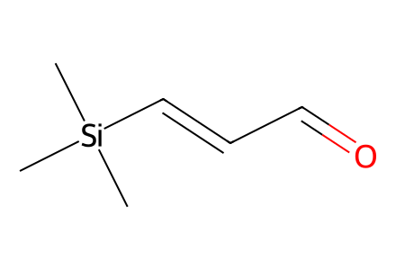
C[Si](C)(C)/C=C/C=O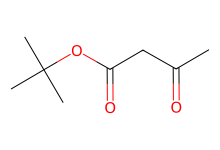
CC(=O)CC(=O)OC(C)(C)C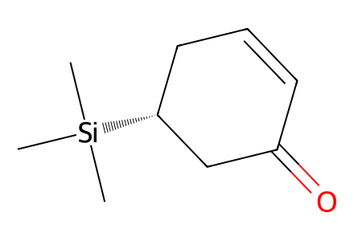
C[Si](C)(C)[C@@H]1CC=CC(=O)C1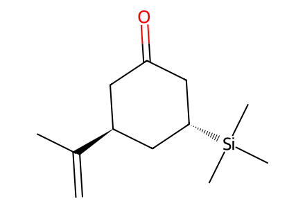
C=C(C)[C@H]1CC(=O)C[C@H]([Si](C)(C)C)C1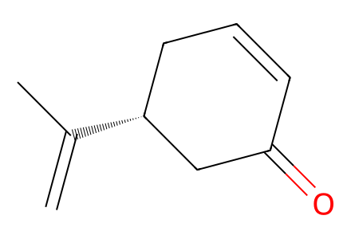
C=C(C)[C@@H]1CC=CC(=O)C1
C=[C](C)[Mg][Br]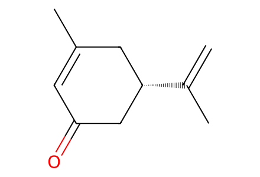
C=C(C)[C@@H]1CC(=O)C=C(C)C1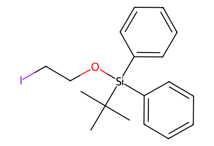
CC(C)(C)[Si](OCCI)(c1ccccc1)c1ccccc1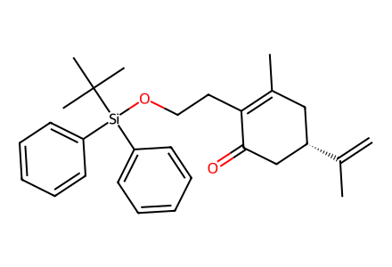
C=C(C)[C@@H]1CC(=O)C(CCO[Si](c2ccccc2)(c2ccccc2)C(C)(C)C)=C(C)C1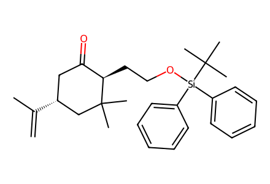
C=C(C)[C@@H]1CC(=O)[C@@H](CCO[Si](c2ccccc2)(c2ccccc2)C(C)(C)C)C(C)(C)C1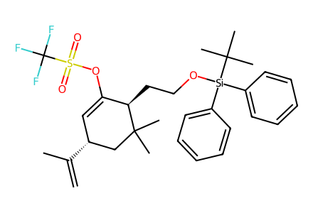
C=C(C)[C@@H]1C=C(OS(=O)(=O)C(F)(F)F)[C@@H](CCO[Si](c2ccccc2)(c2ccccc2)C(C)(C)C)C(C)(C)C1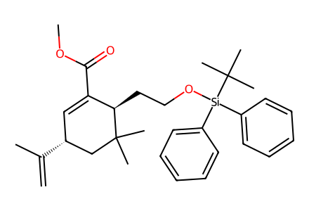
C=C(C)[C@@H]1C=C(C(=O)OC)[C@@H](CCO[Si](c2ccccc2)(c2ccccc2)C(C)(C)C)C(C)(C)C1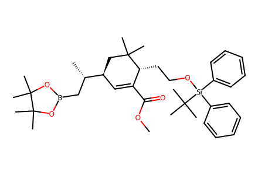
COC(=O)C1=C[C@@H]([C@@H](C)CB2OC(C)(C)C(C)(C)O2)CC(C)(C)[C@@H]1CCO[Si](c1ccccc1)(c1ccccc1)C(C)(C)C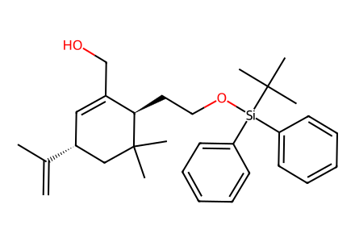
C=C(C)[C@@H]1C=C(CO)[C@@H](CCO[Si](c2ccccc2)(c2ccccc2)C(C)(C)C)C(C)(C)C1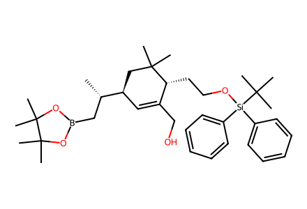
C[C@@H](CB1OC(C)(C)C(C)(C)O1)[C@@H]1C=C(CO)[C@@H](CCO[Si](c2ccccc2)(c2ccccc2)C(C)(C)C)C(C)(C)C1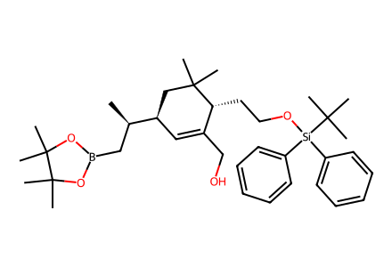
C[C@H](CB1OC(C)(C)C(C)(C)O1)[C@@H]1C=C(CO)[C@@H](CCO[Si](c2ccccc2)(c2ccccc2)C(C)(C)C)C(C)(C)C1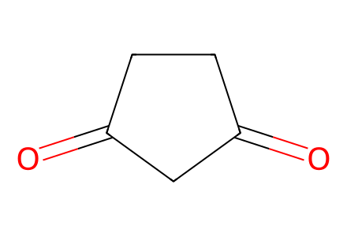
O=C1CCC(=O)C1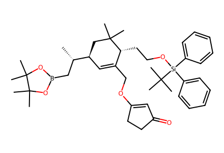
C[C@@H](CB1OC(C)(C)C(C)(C)O1)[C@@H]1C=C(COC2=CC(=O)CC2)[C@@H](CCO[Si](c2ccccc2)(c2ccccc2)C(C)(C)C)C(C)(C)C1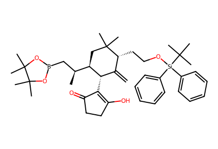
C=C1[C@H](C2=C(O)CCC2=O)[C@@H]([C@@H](C)CB2OC(C)(C)C(C)(C)O2)CC(C)(C)[C@@H]1CCO[Si](c1ccccc1)(c1ccccc1)C(C)(C)C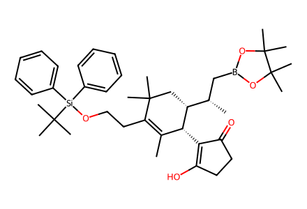
CC1=C(CCO[Si](c2ccccc2)(c2ccccc2)C(C)(C)C)C(C)(C)C[C@H]([C@@H](C)CB2OC(C)(C)C(C)(C)O2)[C@@H]1C1=C(O)CCC1=O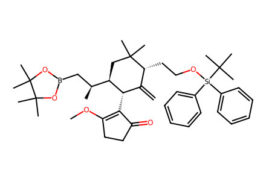
C=C1[C@H](C2=C(OC)CCC2=O)[C@@H]([C@@H](C)CB2OC(C)(C)C(C)(C)O2)CC(C)(C)[C@@H]1CCO[Si](c1ccccc1)(c1ccccc1)C(C)(C)C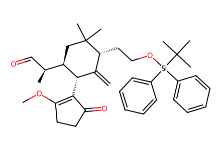
C=C1[C@H](C2=C(OC)CCC2=O)[C@@H]([C@@H](C)C=O)CC(C)(C)[C@@H]1CCO[Si](c1ccccc1)(c1ccccc1)C(C)(C)C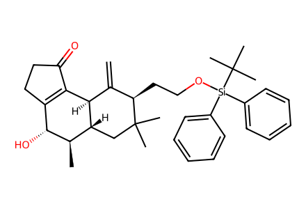
C=C1[C@@H]2C3=C(CCC3=O)[C@@H](O)[C@H](C)[C@H]2CC(C)(C)[C@@H]1CCO[Si](c1ccccc1)(c1ccccc1)C(C)(C)C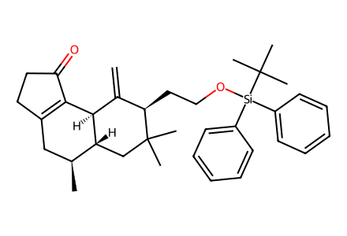
C=C1[C@@H]2C3=C(CCC3=O)C[C@H](C)[C@H]2CC(C)(C)[C@@H]1CCO[Si](c1ccccc1)(c1ccccc1)C(C)(C)C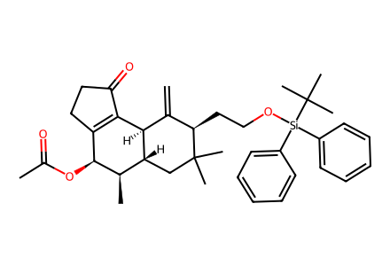
C=C1[C@@H]2C3=C(CCC3=O)[C@H](OC(C)=O)[C@H](C)[C@H]2CC(C)(C)[C@@H]1CCO[Si](c1ccccc1)(c1ccccc1)C(C)(C)C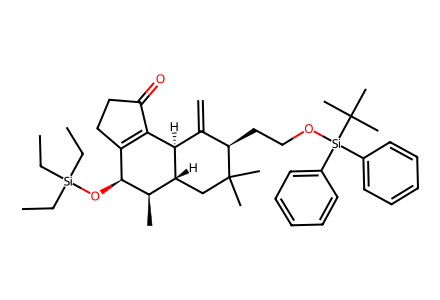
C=C1[C@@H]2C3=C(CCC3=O)[C@H](O[Si](CC)(CC)CC)[C@H](C)[C@H]2CC(C)(C)[C@@H]1CCO[Si](c1ccccc1)(c1ccccc1)C(C)(C)C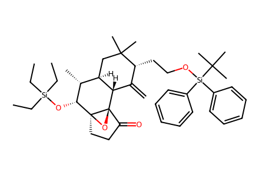
C=C1[C@@H](CCO[Si](c2ccccc2)(c2ccccc2)C(C)(C)C)C(C)(C)C[C@@H]2[C@@H](C)[C@@H](O[Si](CC)(CC)CC)[C@@]34CCC(=O)[C@@]3(O4)[C@@H]12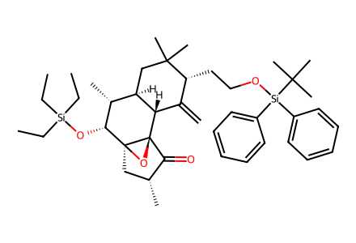
C=C1[C@@H](CCO[Si](c2ccccc2)(c2ccccc2)C(C)(C)C)C(C)(C)C[C@@H]2[C@@H](C)[C@@H](O[Si](CC)(CC)CC)[C@@]34C[C@@H](C)C(=O)[C@@]3(O4)[C@@H]12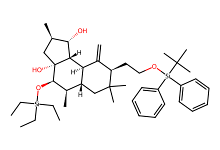
C=C1[C@H]2[C@H](CC(C)(C)[C@@H]1CCO[Si](c1ccccc1)(c1ccccc1)C(C)(C)C)[C@@H](C)[C@@H](O[Si](CC)(CC)CC)[C@@]1(O)C[C@@H](C)[C@H](O)[C@H]21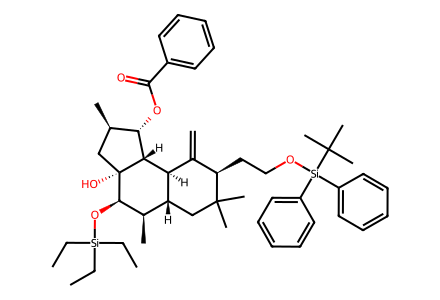
C=C1[C@H]2[C@H](CC(C)(C)[C@@H]1CCO[Si](c1ccccc1)(c1ccccc1)C(C)(C)C)[C@@H](C)[C@@H](O[Si](CC)(CC)CC)[C@@]1(O)C[C@@H](C)[C@H](OC(=O)c3ccccc3)[C@H]21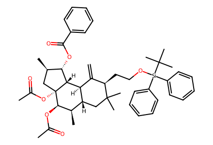
C=C1[C@H]2[C@H](CC(C)(C)[C@@H]1CCO[Si](c1ccccc1)(c1ccccc1)C(C)(C)C)[C@@H](C)[C@@H](OC(C)=O)[C@@]1(OC(C)=O)C[C@@H](C)[C@H](OC(=O)c3ccccc3)[C@H]21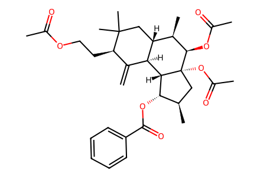
C=C1[C@H]2[C@H](CC(C)(C)[C@@H]1CCOC(C)=O)[C@@H](C)[C@@H](OC(C)=O)[C@@]1(OC(C)=O)C[C@@H](C)[C@H](OC(=O)c3ccccc3)[C@H]21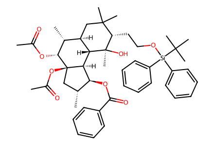
CC(=O)O[C@@H]1[C@H](C)[C@H]2CC(C)(C)[C@H](CCO[Si](c3ccccc3)(c3ccccc3)C(C)(C)C)[C@@](C)(O)[C@@H]2[C@H]2[C@@H](OC(=O)c3ccccc3)[C@H](C)C[C@@]21OC(C)=O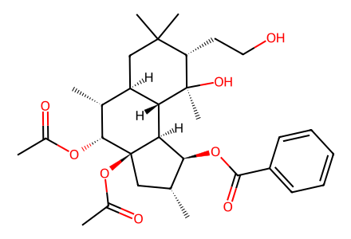
CC(=O)O[C@@H]1[C@H](C)[C@H]2CC(C)(C)[C@H](CCO)[C@@](C)(O)[C@@H]2[C@H]2[C@@H](OC(=O)c3ccccc3)[C@H](C)C[C@@]21OC(C)=O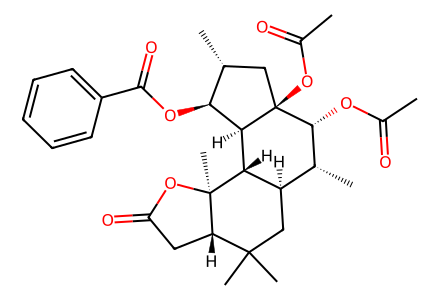
CC(=O)O[C@@H]1[C@H](C)[C@H]2CC(C)(C)[C@@H]3CC(=O)O[C@@]3(C)[C@@H]2[C@H]2[C@@H](OC(=O)c3ccccc3)[C@H](C)C[C@@]21OC(C)=O